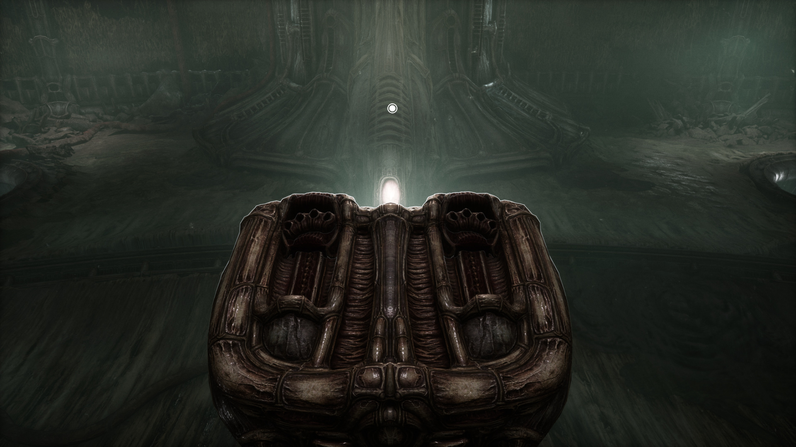
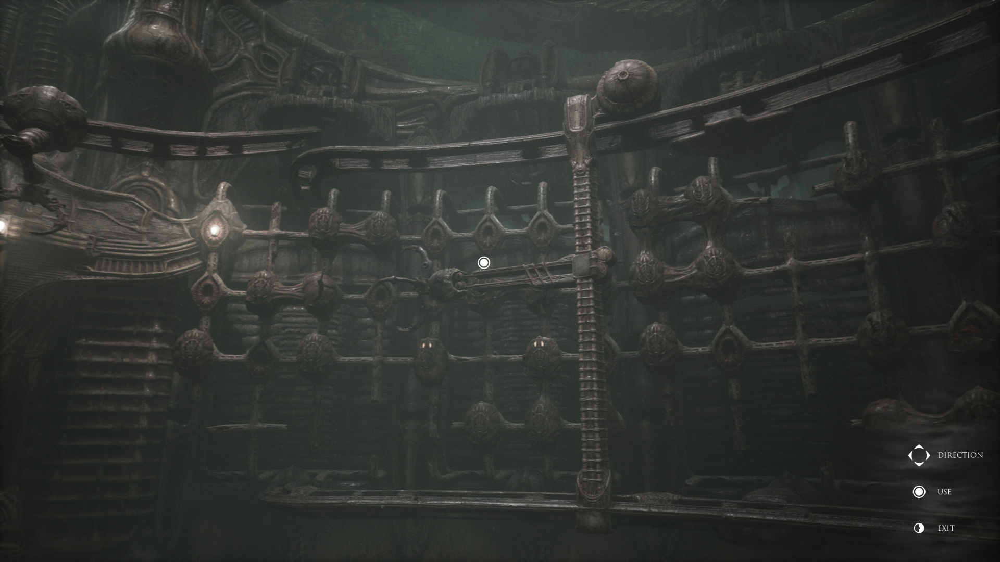
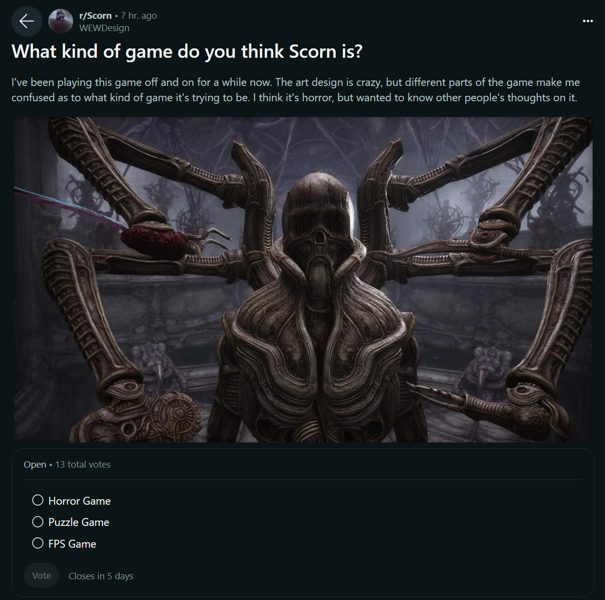
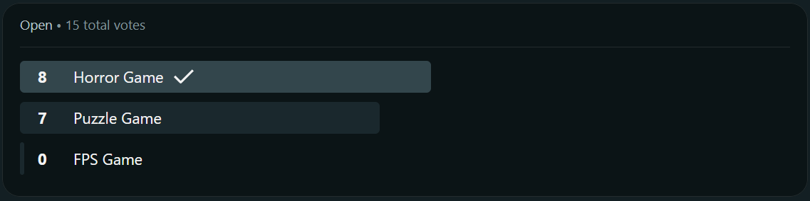
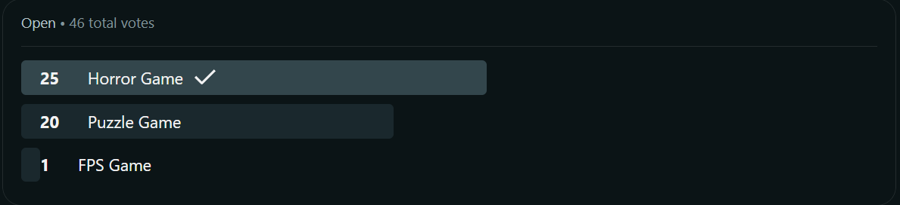

Scorn — Analysis
Scorn is a survival horror game released in October 2022. Set in a stark, alien world inspired by the works of H.R. Giger and Zdzisław Beksiński, it was critically praised for its visual art direction and environmental puzzles. However, it received mixed reactions regarding game length, pacing, and unbalanced combat.
This analysis attempts to re-imagine Scorn's game design into a more cohesive experience — identifying where the game's identity clashes with its mechanics, and proposing alternatives from a UX and game design lens.
The developers intentionally designed the game with minimal exposition — the player is thrown into the world with no context, instructions, or clear narrative guidance. While this aligns philosophically with Lovecraftian unknowability, it compounds an already fragmented experience.
Pain Points
- Combat is unbalanced — player health is low going into encounters while enemy damage output is disproportionately high.
- Save system is punishing — location-based manual saves can lock players into progression traps with insufficient resources.
- Identity crisis — Scorn doesn't clearly define whether it's a horror game, a puzzle game, or an FPS, which creates conflicting expectations.


Scorn contains no traditional UI screens — this analysis focuses on game design and experience rather than visual UX artifacts.
Competitive Analysis
Four games were analyzed as reference points for specific design problems Scorn faces:
- Resident Evil 4 — location-based manual saves that give players agency without trapping them
- Half-Life: Alyx — minimal HUD horror experience that still gives players enough spatial awareness
- Crimson Snow — checkpoint saves keyed to puzzle completion; low friction for short experiences
- The Witness — pure puzzle game with zero combat; discovery is the entire experience
Community Research
A poll was run on the Scorn subreddit asking how players perceive the game's primary identity:
- Horror Game
- Puzzle Game
- FPS Game
Result: Across both polls, FPS was rejected almost unanimously (1 vote out of 61 total). Horror Game led narrowly over Puzzle Game, but combat was broadly identified in comments as the element most harmful to the overall experience.



Game Type
- Free Roam Mode — like Assassin's Creed: Odyssey/Origins Discovery Tour; removes combat entirely, leaving pure exploration and atmosphere
- Puzzles Only — like The Witness; strip out combat entirely, lean into the identity players actually gave it
Save Mechanics
- Location-based manual saves — like RE4; preserved agency and tension without resource traps
- Autosave on puzzle completion — like The Witness and Crimson Snow; removes the save system from the player's cognitive load
Combat
- Eliminate entirely — strip all combat from the experience
- Tweak the balance — faster strafe speed, toned-down enemy accuracy, better feedback on damage taken
Each pairing was evaluated against data from the community poll, competitive analysis findings, and the original developer intent.
Recommendation
Based on research and community data, the proposed solution is:
- Puzzles Only — aligns with community identity perception and removes the jarring tonal shift of combat
- Autosave on puzzle completion — removes save anxiety and aligns with the game's commitment to keeping the player in the world without menus
- Eliminate combat — makes the game more cohesive, shorter in perceived length, and fully committed to its environmental horror identity
The recommended experience is a ~4-hour atmospheric puzzle game with no combat, autosaving, and the full visual and audio design intact. Scorn's world is extraordinary — the design should serve it, not fight it.
Game UX doesn't always involve the visual. Scorn's primary UX failures are mechanical and structural — the absence of traditional UI elements means the experience must carry all meaning through environmental design, pacing, and player agency over systems like saves and combat.
This project reinforced the importance of clearly defining what kind of experience a game is before shipping — not to constrain creativity, but to ensure all design decisions serve a coherent player promise.
Not all game experiences need explicit context or narrative provided to the player — sometimes discovery and uncertainty are the point. But that philosophy requires mechanical consistency: if you remove context from the story, remove friction from the systems too.